×

Arcana Cards
The Fool

The Magician

The High Priestess

The Empress

The Emperor

The Hierophant

The Lovers

The Chariot

Strength

The Hermit

Wheel Of Fortune

Justice

The Hanged Man

Death

Temperance

The Devil

The Tower

The Star

The Moon
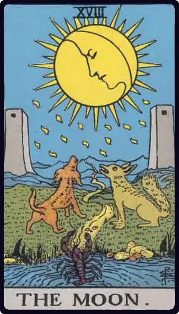The Sun

Judgement
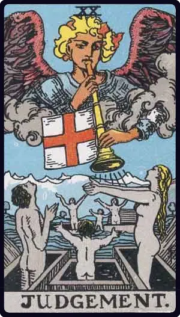The World

Cup Cards
Ace of Cups

Two of Cups

Three of Cups

Four of Cups

Five of Cups

Six of Cups

Seven of Cups

Eight of Cups

Nine of Cups

Ten of Cups

Page of Cups

Knight of Cups

Queen of Cups

King of Cups

Pentacles Cards
Ace of Pentacles

Two of Pentacles

Three of Pentacles

Four of Pentacles

Five of Pentacles

Six of Pentacles
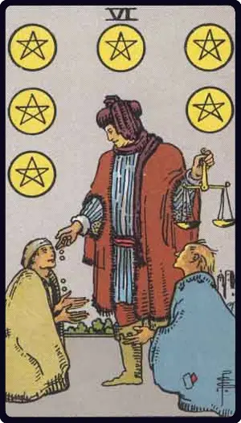Seven of Pentacles

Eight of Pentacles

Nine of Pentacles

Ten of Pentacles
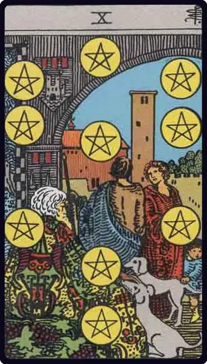Page of Pentacles

Knight of Pentacles

Queen of Pentacles

King of Pentacles

Sword Cards
Ace of Swords

Two of Swords
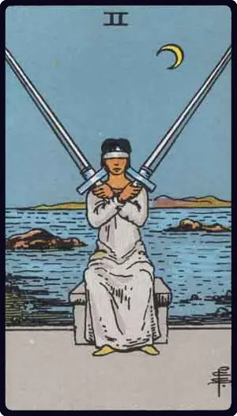Three of Swords

Four of Swords

Five of Swords

Six of Swords

Seven of Swords
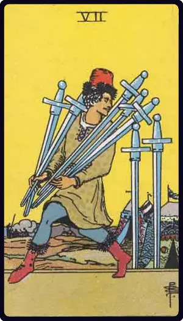Eight of Swords

Nine of Swords

Ten of Swords

Page of Swords
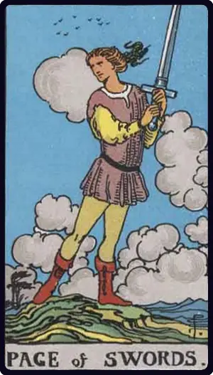Knight of Swords

Queen of Swords
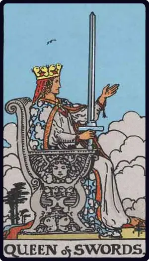King of Swords
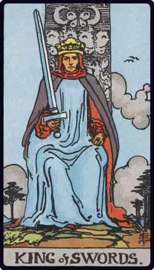Wand Cards
Ace of Wands
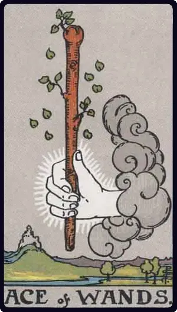Two of Wands
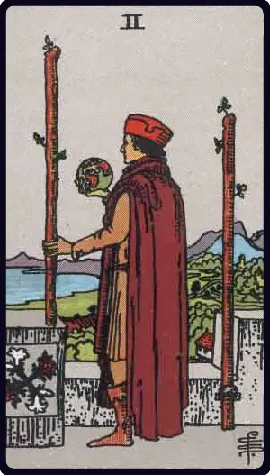Three of Wands

Four of Wands
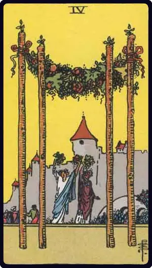Five of Wands
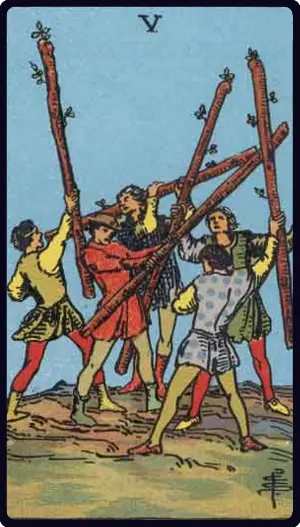Six of Wands

Seven of Wands
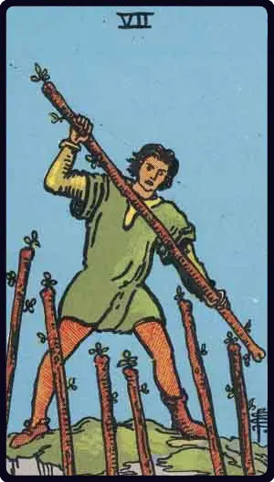Eight of Wands

Nine of Wands

Ten of Wands

Page of Wands

Knight of Wands

Queen of Wands
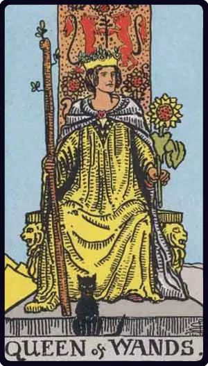King of Wands